《Response和ServletContext-笔记》
学习目标
1、能够理解HTTP协议响应内容
2、能够使用servletcontext域对象
3、能够完成案例统计访问次数
4、能够使用Response对象操作HTTP响应内容
5、能够处理响应乱码
6、能够完成文件下载案例
学习内容
1.响应的三个组成部分
目标
HTTP响应由哪三个组成部分
什么是HTTP响应
概念：由服务器发送给浏览器的所有数据
组成：响应行(状态行)，响应头，响应体
数据准备
<!DOCTYPE html>
<html lang="zh-CN">
<head>
<meta charset="UTF-8">
<title>用户登录</title>
</head>
<body>
<h2>用户登录</h2>
<form action="login" method="post">
<table>
<tr>
<td>用户名</td>
<td><input type="text" name="username"/></td>
</tr>
<tr>
<td>密码</td>
<td><input type="password" name="password"/></td>
</tr>
<tr>
<td colspan="2"><input type="submit" value="登录"/></td>
</tr>
</table>
</form>
</body>
</html>响应信息的三个组成
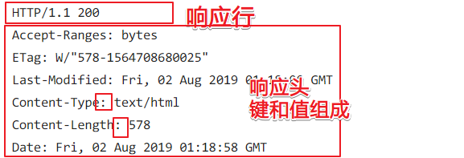
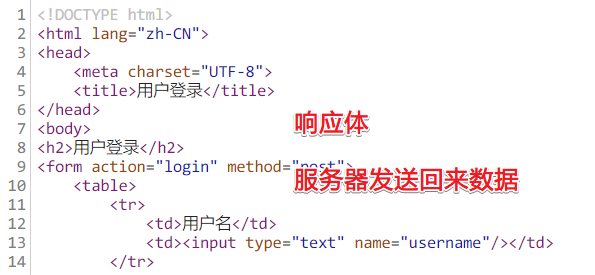
小结
响应有哪三个组成部分？
- 响应信息= 响应行（状态行）+ 响应头+ 响应体
2.响应行、响应头、响应体的格式
目标
- 响应行的格式
- 响应头的格式
- 响应体的格式
响应行
又叫状态行，组成： 协议和版本 状态码 状态信息
HTTP/1.1 200 OK
HTTP/1.1 404 Not Found状态码的作用
代表本次请求服务器响应的状态。
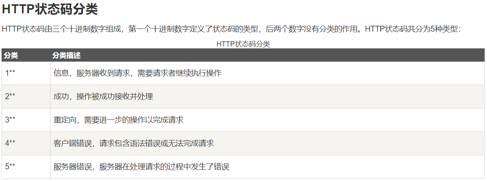
常见的状态码
- 200 : 请求成功并且成功返回数据。
- 302 : 请求的重定向
- 304 : 使用了缓存
- 404 ：找不到访问到资源。 检查自己访问的路径是否正确
- 405 : servlet没有doGet或者是doPost方法。
- 500: 服务端程序出现了异常
响应头
| 响应头信息 | 说明 |
|---|---|
| Location: http://www.itcast.cn | 在浏览器端进行了重定向 下一个跳转到的地址 |
| Server:Apache Tomcat | 服务器名字 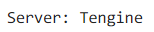 |
| Content-Encoding: gzip | 指定服务器数据压缩格式，如果数据量大,服务器可以先压缩，压缩后再发给浏览器。浏览器就要解压以后才可能使用。 |
| Content-Length: 80 | 服务器返回数据的长度 |
| Content-Type: text/html; charset=utf-8 | 从服务器返回内容类型和编码 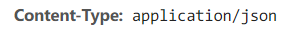 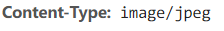 |
| Refresh: 5;url=/hello.html | 过5秒以后跳转到url指定的页面,或者刷新 |
| Content-Disposition: attachment; filename=文件名.扩展名 | 指定浏览器打开文件的方式，attachment表示以附件的方式下载文件，filename指定保存到本地的文件名 |
Content：内容
Context：上下文
响应体
服务器发送给浏览器内容
小结
场景的状态码？
- 200 成功响应
- 302 重定向
- 304 使用缓存
- 404 找不到资源,路径有误
- 405 没有找到doget或者是dopost方法
- 500 服务端异常3. 响应对象的方法：与状态码有关(一般不需要我们单独设置状态码的，暂时了解即可)
目标
与响应行有关的方法
什么是HttpServletResponse对象
这是JavaEE提供的一个接口，本身没有去实现。
- 由谁提供实现类：Tomcat(Web容器来提供，如：WebLogic)
- 由谁创建此对象：由Tomcat来创建响应对象
- 它的父接口是：ServletResponse
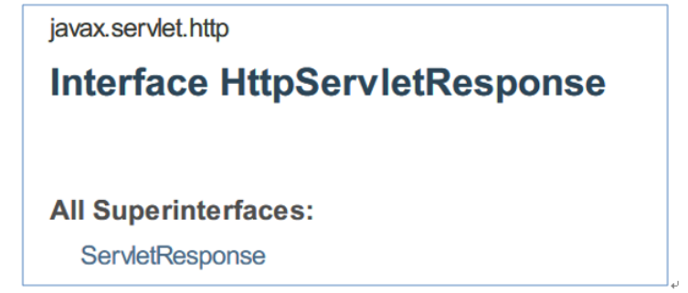
设置状态码的方法
很少单独设置状态码，与其它的方法结合起来使用才有一定的作用。
| 状态码的方法 | 描述 |
|---|---|
| setStatus(int status) | 设置状态码，通常使用常量 |
| sendError(int sc) | 发送错误码，显示错误的页面 |
| sendError(int sc, String msg) | 还提供了一个错误的信息 |
演示代码
package com.itheima.web;
import javax.servlet.ServletException;
import javax.servlet.annotation.WebServlet;
import javax.servlet.http.HttpServlet;
import javax.servlet.http.HttpServletRequest;
import javax.servlet.http.HttpServletResponse;
import java.io.IOException;
/*
学习目标(了解)： 通过response设置转态码
response操作状态码的方法：
1. setStatus(int status) 设置状态码，通常使用常量
2. sendError(int sc) 发送错误码，显示错误的页面
3. sendError(int sc, String msg) 发送错误码，并且还提供了一个错误的信息
*/
@WebServlet("/status")
public class _02StatutsCodeServlet extends HttpServlet {
protected void doPost(HttpServletRequest request, HttpServletResponse response) throws ServletException, IOException {
response.setContentType("text/html;charset=utf-8");
//设置状态码
// response.setStatus(201);
//发送错误码， 并且指定信息
response.sendError(404,"您的路径有误喔！");
}
protected void doGet(HttpServletRequest request, HttpServletResponse response) throws ServletException, IOException {
doPost(request, response);
}
}小结
| 状态码的方法 | 描述 |
|---|---|
| setStatus(int status) | 设置状态码 |
| sendError(int sc,String msg) | 发送错误码，并且设置错误的信息 |
4.响应对象：响应头相关方法
目标
- 学习响应头相关的方法
- 案例：过3秒跳转到其它页面
响应头的方法
| 响应头的方法 | 描述 |
|---|---|
| void setHeader(String name, String value) | 设置一个响应头，指定键和值 |
案例：设置响应头过3秒跳转(了解)
步骤
创建Demo2RefreshServlet
调用setHeader，设置消息头（”Refresh”,”3;url=http://www.itcast.cn"）
代码
package com.itheima.web;
import javax.servlet.ServletException;
import javax.servlet.annotation.WebServlet;
import javax.servlet.http.HttpServlet;
import javax.servlet.http.HttpServletRequest;
import javax.servlet.http.HttpServletResponse;
import java.io.IOException;
import java.io.PrintWriter;
/*
学习目标(了解)： 学习refresh的响应头，使用refresh响应头让浏览器跳转
需求： 设置响应头过3秒跳转
response操作响应头的方法：
setHeader(key,value); 设置响应头
*/
@WebServlet("/refresh")
public class _03RefreshServlet extends HttpServlet {
protected void doPost(HttpServletRequest request, HttpServletResponse response) throws ServletException, IOException {
response.setContentType("text/html;charset=utf-8");
PrintWriter out = response.getWriter();
out.write("3秒钟之后跳转到首页");
//设置了refresh响应头，3秒钟之后跳转到传智官网
response.setHeader("refresh","3;url=http://www.itcast.cn");
}
protected void doGet(HttpServletRequest request, HttpServletResponse response) throws ServletException, IOException {
doPost(request, response);
}
}案例：使用location实现页面跳转(了解)
步骤
- 只设置location响应头
- 同时设置302状态码
- 使用重定向的方法跳转
代码
package com.itheima.web;
import javax.servlet.ServletException;
import javax.servlet.annotation.WebServlet;
import javax.servlet.http.HttpServlet;
import javax.servlet.http.HttpServletRequest;
import javax.servlet.http.HttpServletResponse;
import java.io.IOException;
import java.io.PrintWriter;
/*
学习目标(了解)： 学习location的响应头，使用location实现实现请求重定向
location响应头的作用： 实现请求重定向
*/
@WebServlet("/location")
public class _04LocationServlet extends HttpServlet {
protected void doPost(HttpServletRequest request, HttpServletResponse response) throws ServletException, IOException {
response.setContentType("text/html;charset=utf-8");
//注意：如果使用location实现请求重定向一定要设置状态码
// response.setStatus(302);
//设置location的响应头，实现请求重定向
// response.setHeader("location",request.getContextPath()+"/1.html");
//一般我们请求重定向都是使用sendRedirect的方法, sendRedirect()这方法就是封装了上面两个语句
response.sendRedirect(request.getContextPath()+"/1.html");
}
protected void doGet(HttpServletRequest request, HttpServletResponse response) throws ServletException, IOException {
doPost(request, response);
}
}小结
| 响应头的方法 | 描述 |
|---|---|
| void setHeader(String name, String value) | 设置响应头的方法 |
5.案例：响应头数据压缩(重点)
目标
在服务器端对数据压缩后在浏览器端显示出来
需求
使用数据压缩之后再从服务器传输数据到浏览器, 可以减少网络的传输量,提高网页的下载速度。
GZIPOutputStream类的方法
| 构造方法 | 说明 |
|---|---|
| GZIPOutputStream(OutputStream out) | 对传入的输出流进行压缩 并且使用这个传入的输出流输出数据 使用GZIP格式进行压缩 |
| GZIPOutputStream类的方法 | 说明 |
|---|---|
| public void write(byte[] b) | 写出传入的字节数组 |
| void finish() | 完成将压缩数据写入输出流的操作，无需关闭底层流。 |
步骤
如果需要对数据进行压缩，需要使用压缩流，将响应的输出流做为参数。
使用压缩流的write方法：首先会对数据进行压缩处理，然后调用传递进去OutputStream对象的write方法把压缩的数据写出去。
完成将压缩数据写入输出流的操作，如果没有调用结束的方法，则浏览器上看不到东西。
要点
要设置相应响应头信息，告诉浏览器目前内容是以压缩包的形式传输的，不然就会以附件的方式下载下来了。
response.setHeader("Content-Encoding","gzip")响应头
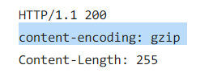
代码
package com.itheima.web;
import javax.servlet.ServletException;
import javax.servlet.ServletOutputStream;
import javax.servlet.annotation.WebServlet;
import javax.servlet.http.HttpServlet;
import javax.servlet.http.HttpServletRequest;
import javax.servlet.http.HttpServletResponse;
import java.io.BufferedInputStream;
import java.io.FileInputStream;
import java.io.FileNotFoundException;
import java.io.IOException;
import java.util.zip.GZIPOutputStream;
/*
学习目标(重点)： 学习Content-Encoding的响应头，使用Content-Encoding通知浏览器对数据进行解压
Content-Encoding作用： 通知浏览器对数据进行解压
*/
@WebServlet("/encoding")
public class _05ContentEncodingServlet extends HttpServlet {
protected void doPost(HttpServletRequest request, HttpServletResponse response) throws ServletException, IOException {
//通知浏览器传输给你的数据是文本形式存在html代码，麻烦使用utf-8解码。该语句需要注释
// response.setContentType("text/html;charset=utf-8");
//通知浏览器对数据进行解压
response.setHeader("content-encoding","gzip");
//获取到response的字节输出流
ServletOutputStream out = response.getOutputStream();
//准备数据
StringBuilder sb = new StringBuilder();
for (int i = 0; i < 30000; i++) {
sb.append("hello java");
}
byte[] buf = sb.toString().getBytes();
//创建一个压缩输出字节流
//GZIPOutputStream是不具备把数据输出给浏览器的能力的，GZIPOutputStream的作用就是对数据进行压缩。
// 如果需要把数据写出还是需要借用你传递过来的outputStream
GZIPOutputStream gzipOutputStream =new GZIPOutputStream(out);
//把数据写出
gzipOutputStream.write(buf);
//完成将压缩数据写入输出流的操作，无需关闭底层流
gzipOutputStream.finish();
}
protected void doGet(HttpServletRequest request, HttpServletResponse response) throws ServletException, IOException {
doPost(request, response);
}
}小结
| GZIPOutputStream类的方法 | 说明 |
|---|---|
| public void write(byte[] b) | 把字节数组写出到浏览器 |
| void finish() | 把GZIPOutputStream里面的数据刷出，不关闭底层的输出流 |
通知浏览器对数据解压： content-encoding
6.响应体：处理响应乱码的问题
目标
- 响应体数据的两种方式
- 处理汉字乱码的问题
响应体的两种数据
- 文本：使用字符流处理
- 二进制：使用字节流处理
| 响应体的方法 | 描述 |
|---|---|
| OutputStream getOutputStream() | 处理二进制的数据，使用字节流 |
| PrintWriter getWriter() | 处理文本数据，使用字符流 |
打印流的一些疑问
直接使用打印输出流，输出汉字的结果是什么？
PrintWriter out = response.getWriter();
汉字会出现乱码，因为没有指定响应的编码使用PrintWriter出现乱码的原因
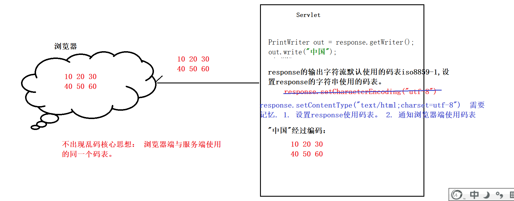
代码
package com.itheima.web;
import javax.servlet.ServletException;
import javax.servlet.ServletOutputStream;
import javax.servlet.annotation.WebServlet;
import javax.servlet.http.HttpServlet;
import javax.servlet.http.HttpServletRequest;
import javax.servlet.http.HttpServletResponse;
import java.io.IOException;
import java.io.PrintWriter;
import java.util.zip.GZIPOutputStream;
/*
学习目标(重点)： 学习Content-type的响应头，使用content-type解决响应乱码问题
response的输出流的方法：
1. getOutputStream() 获取response的输出字节流
2. getWrite() 获取response的输出字符流
什么时候使用字节流？ 什么时候使用字符流
如果输出的数据是二进制文件的形式存在，就应该使用字节流，比如： 图片、音频、视频...
如果输出的是字符串的数据就应该使用字符流。
解决响应乱码方案：
response.setContentType("text/html;charset=utf-8")
*/
@WebServlet("/contentType")
public class _06ContentTypeServlet extends HttpServlet {
protected void doPost(HttpServletRequest request, HttpServletResponse response) throws ServletException, IOException {
/* ServletOutputStream outputStream = response.getOutputStream();
//编码，把中国编码为字节数组，这里使用的码表与setttings里面的File Encoding 的 project encoding是对应的
//强烈不推荐使用字节流输出字符串的数据
byte[] buf = "中国".getBytes();
outputStream.write(buf);*/
//设置repsonse的输出字符流使用的码表
// response.setCharacterEncoding("utf-8");
/*
response.setContentType("text/html;charset=utf-8");该语句有两个作用：
1. 设置repsonse的字符流使用utf-8码表
2. 通知浏览器使用utf-8码表去解码
*/
response.setContentType("text/html;charset=utf-8");
//获取response输出字符流
PrintWriter out = response.getWriter();
out.write("中国");
}
protected void doGet(HttpServletRequest request, HttpServletResponse response) throws ServletException, IOException {
doPost(request, response);
}
}小结
content-type响应头的作用：
设置repsonse的字符流使用utf-8码表
2. 通知浏览器使用utf-8码表去解码
7.如何得到ServletContext对象
目标
如何得到上下文对象
什么是ServletContext
概念：ServletContext专业术语上下文对象， 简单理解ServletContext大家可以理解为就是代表了当前的项目(模块)，
==注意：tomcat启动的时候会为每一个项目（模块）都会创建一个唯一的ServletContext==
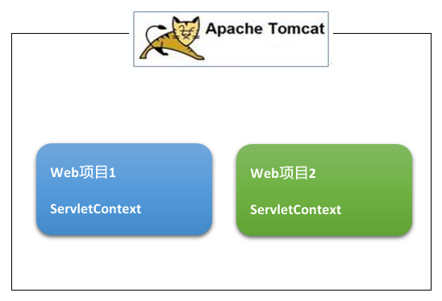
主要作用
得到项目中web目录下资源。
如：得到src目录 InputStream 类对象.getResourceAsStream()
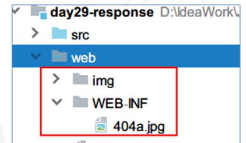
上下文对象也是上下文域，它是一个作用域，可以给所有的用户共享资源。
得到一些全局的配置的参数（了解）
得到上下文域的方法
| ServletConfig接口中方法 | 描述 |
|---|---|
| ServletContext getServletContext() | 调用继承下来的方法得到上下文对象 |
Servlet的继承结构
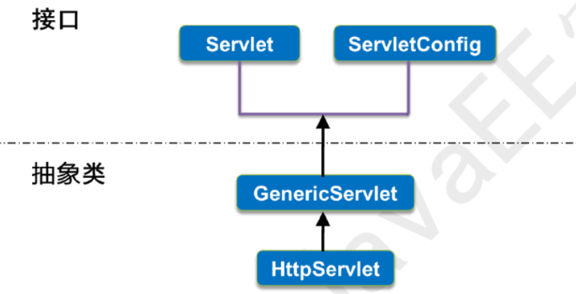
得到ServletContext的代码
package com.itheima.web;
import javax.servlet.ServletContext;
import javax.servlet.ServletException;
import javax.servlet.annotation.WebServlet;
import javax.servlet.http.HttpServlet;
import javax.servlet.http.HttpServletRequest;
import javax.servlet.http.HttpServletResponse;
import java.io.IOException;
import java.io.PrintWriter;
/*
学习目标(重点)：如何得到ServletContext， 清楚ServletContext的特点
得到servletContext的方法：
1. getServletContext() 得到ServletContext对象。
ServletContext的生命周期：
1. 服务器一旦启动的时候，就会为每一个模块创建一个唯一的ServletContext，这个ServletContext可以给所有的Servlet共享
2. servletContext只有在服务器关闭的时候就会消亡.
*/
@WebServlet("/context1")
public class _07ServletContextServlet extends HttpServlet {
protected void doPost(HttpServletRequest request, HttpServletResponse response) throws ServletException, IOException {
response.setContentType("text/html;charset=utf-8");
PrintWriter out = response.getWriter();
//得到ServletContext
ServletContext context1 = this.getServletContext();
ServletContext context2 = this.getServletContext();
out.write("context1="+context1);
out.write("是同一个对象吗？"+(context1==context2));
}
protected void doGet(HttpServletRequest request, HttpServletResponse response) throws ServletException, IOException {
doPost(request, response);
}
}小结
每个Web项目对应几个上下文对象？
- 一个
如何得到ServletContext？
- this.getServletContext()
8.读取全局的配置参数[为了后面框架服务，正常是不写这里的代码]
目标
获取全局的配置参数：可以给所有的Servlet使用
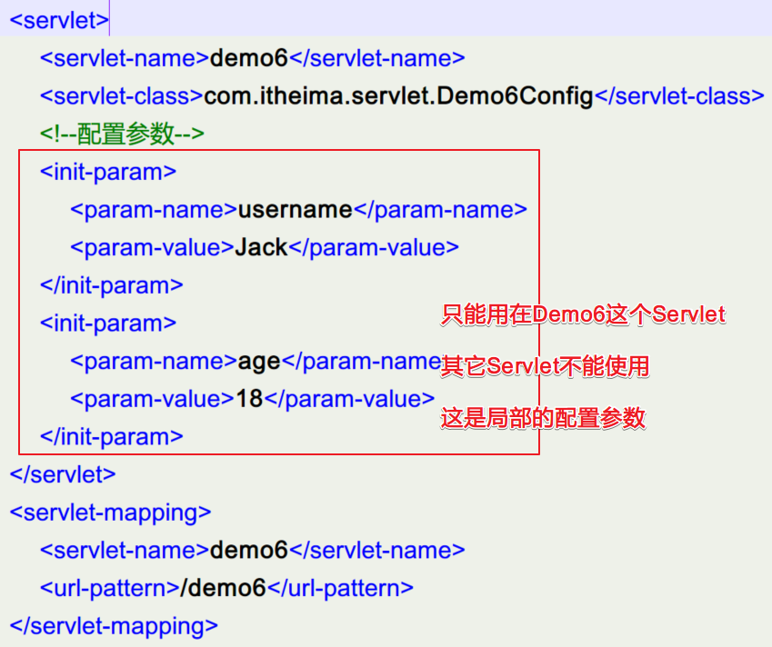
ServletContext方法
| 方法 | 功能 |
|---|---|
| String getInitParameter(String name) | 通过参数名得到全局的参数值 |
| Enumeration<String> getInitParameterNames() | 得到所有全局参数的名字 |
需求
在web.xml中设置2个全局的参数，username=NewBoy, age=18 在不同的Servlet中去获取这2个值，并使用上面2个方法。
代码
web.xml
<?xml version="1.0" encoding="UTF-8"?>
<web-app xmlns="http://xmlns.jcp.org/xml/ns/javaee"
xmlns:xsi="http://www.w3.org/2001/XMLSchema-instance"
xsi:schemaLocation="http://xmlns.jcp.org/xml/ns/javaee http://xmlns.jcp.org/xml/ns/javaee/web-app_3_1.xsd"
version="3.1">
<!--配置一个全局配置参数-->
<context-param>
<param-name>character</param-name>
<param-value>utf-8</param-value>
</context-param>
<!--配置一个全局配置参数-->
<context-param>
<param-name>url</param-name>
<param-value>jdbc:mysql:///db1</param-value>
</context-param>
</web-app>servlet代码
package com.itheima.web;
import javax.servlet.ServletContext;
import javax.servlet.ServletException;
import javax.servlet.annotation.WebServlet;
import javax.servlet.http.HttpServlet;
import javax.servlet.http.HttpServletRequest;
import javax.servlet.http.HttpServletResponse;
import java.io.IOException;
import java.io.PrintWriter;
import java.util.Enumeration;
/*
学习目标(重点)：通过ServletContext获取全局配置参数。
操作全局配置参数的方法：
1. String getInitParameter(String name) 根据配置参数的名字获取配置参数的value
2. Enumeration<String> getInitParameterNames() 获取所有的配置参数的名字
*/
@WebServlet("/param")
public class _08ContextServlet extends HttpServlet {
protected void doPost(HttpServletRequest request, HttpServletResponse response) throws ServletException, IOException {
response.setContentType("text/html;charset=utf-8");
PrintWriter out = response.getWriter();
ServletContext servletContext = this.getServletContext();
//得到所有配置参数的名字
Enumeration<String> e = servletContext.getInitParameterNames();
while(e.hasMoreElements()){
String key = e.nextElement();
String value = servletContext.getInitParameter(key);
out.write(key+ " ： "+ value+"<br/>");
}
}
protected void doGet(HttpServletRequest request, HttpServletResponse response) throws ServletException, IOException {
doPost(request, response);
}
}小结
| 方法 | 功能 |
|---|---|
| String getInitParameter(String name) | 根据全局配置参数的name获取值 |
| Enumeration<String> getInitParameterNames() | 获取所有全局配置参数的name |
9.案例：获取当前工程的资源（重点）
目标
得到web目录下的某个图片资源在浏览器上显示出来
找资源文件总结
- 如果找src路径下面的资源，请使用类路径。 class.getResourceAsStream("/") ， “/”代表的是src
- 如果查找的是web目录下的资源，请使用servletContext.getResourceAsStream("/") , "/"代表web目录方法
| ServletContext的方法 | 功能 |
|---|---|
| InputStream getResourceAsStream(String path) | 读取web目录下资源，转成字节输入流 |
| String getRealPath(String path) | 得到资源文件的真实路径 |
案例：读取Web目录下的资源文件
执行效果
代码
package com.itheima.web;
import javax.servlet.ServletContext;
import javax.servlet.ServletException;
import javax.servlet.ServletOutputStream;
import javax.servlet.annotation.WebServlet;
import javax.servlet.http.HttpServlet;
import javax.servlet.http.HttpServletRequest;
import javax.servlet.http.HttpServletResponse;
import java.io.IOException;
import java.io.InputStream;
import java.io.PrintWriter;
import java.util.Enumeration;
/*
学习目标(重中重点)：通过ServletContext获取web目录下面的资源
获取web目录下的资源的方法：
1. InputStream getResourceAsStream(String path) 获取web目录下的资源，返回资源输入字节流
2. String getRealPath(String path) 获取web目录下的资源,返回资源的绝对路径
查找资源的方式：
1. 如果我们查找是src目录下的资源，使用类文件路径。
this.getClass().getResourceAsStream("/")
2. 查找的资源如果在web目录下，请使用ServletContext去查找。
servletContext.getResourceAsStream("/img/404.jpg");
*/
@WebServlet("/getResource")
public class _09GetResourceServlet extends HttpServlet {
protected void doPost(HttpServletRequest request, HttpServletResponse response) throws ServletException, IOException {
//1. 获取response的输出字节流
ServletOutputStream out = response.getOutputStream();
//2. 通过servletContext对象获取web目下的图片资源
ServletContext servletContext = this.getServletContext();
String realPath = servletContext.getRealPath("/img/404.jpg");
System.out.println("图片的真实路径："+ realPath);
InputStream inputStream = servletContext.getResourceAsStream("/img/404.jpg");// 该路径也是/开头，这里的“/”大家可以理解为是web目录
//3. 边读编写
byte[] buf = new byte[1024];
int length= 0;
while((length = inputStream.read(buf))!=-1){
out.write(buf,0,length);
}
//关闭资源
inputStream.close();
}
protected void doGet(HttpServletRequest request, HttpServletResponse response) throws ServletException, IOException {
doPost(request, response);
}
}| 使用IOUtils工具类的方法 | 功能 |
|---|---|
| copy(InputStream in, OutputStream out) | 将字节输入流写到字节输出流中 |
改进代码
package com.itheima.web;
import org.apache.commons.io.IOUtils;
import javax.servlet.ServletContext;
import javax.servlet.ServletException;
import javax.servlet.ServletOutputStream;
import javax.servlet.annotation.WebServlet;
import javax.servlet.http.HttpServlet;
import javax.servlet.http.HttpServletRequest;
import javax.servlet.http.HttpServletResponse;
import java.io.IOException;
import java.io.InputStream;
import java.io.PrintWriter;
import java.util.Enumeration;
/*
学习目标(重中重点)：通过ServletContext获取web目录下面的资源
获取web目录下的资源的方法：
1. InputStream getResourceAsStream(String path) 获取web目录下的资源，返回资源输入字节流
2. String getRealPath(String path) 获取web目录下的资源,返回资源的绝对路径
查找资源的方式：
1. 如果我们查找是src目录下的资源，使用类文件路径。
this.getClass().getResourceAsStream("/")
2. 查找的资源如果在web目录下，请使用ServletContext去查找。
servletContext.getResourceAsStream("/img/404.jpg");
*/
@WebServlet("/getResource")
public class _09GetResourceServlet extends HttpServlet {
protected void doPost(HttpServletRequest request, HttpServletResponse response) throws ServletException, IOException {
//1. 获取response的输出字节流
ServletOutputStream out = response.getOutputStream();
//2. 通过servletContext对象获取web目下的图片资源
ServletContext servletContext = this.getServletContext();
String realPath = servletContext.getRealPath("/img/404.jpg");
System.out.println("图片的真实路径："+ realPath);
InputStream inputStream = servletContext.getResourceAsStream("/img/404.jpg");// 该路径也是/开头，这里的“/”大家可以理解为是web目录
//3. 边读编写
/* byte[] buf = new byte[1024];
int length= 0;
while((length = inputStream.read(buf))!=-1){
out.write(buf,0,length);
}*/
IOUtils.copy(inputStream,out);
//关闭资源
inputStream.close();
}
protected void doGet(HttpServletRequest request, HttpServletResponse response) throws ServletException, IOException {
doPost(request, response);
}
}小结
| ServletContext的方法 | 功能 |
|---|---|
| **InputStream getResourceAsStream(String path) | 读取web目录下的资源，返回资源的输入字节流 |
==注意：== idea2019\idea2018有一个bug，拷贝的静态资源文件有时候没有拷贝到out目录下。（而且是概率性事件）
上下文域
==上下文对象就是上下文域==，作用域的功能：用于不同的Servlet之间共享数据，用于不同的用户之间数据共享。
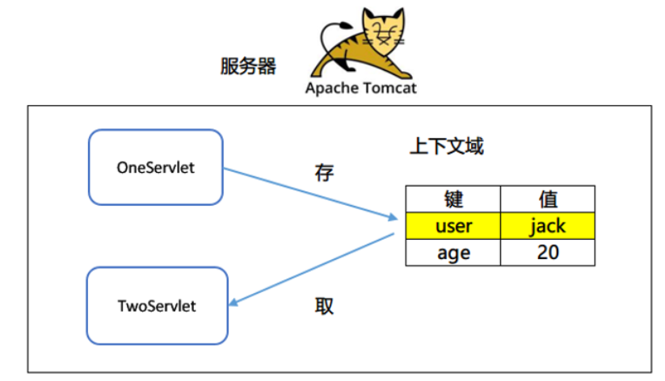
10.上下文域的作用范围
只要服务器不关闭，这个作用域中数据就一直存在，三个作用域中最大作用域。
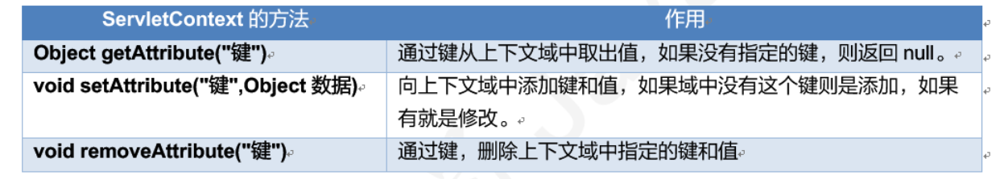
ServletContext域对象的基本使用
存储数据：
package com.itheima.web;
import org.apache.commons.io.IOUtils;
import javax.servlet.ServletContext;
import javax.servlet.ServletException;
import javax.servlet.ServletOutputStream;
import javax.servlet.annotation.WebServlet;
import javax.servlet.http.HttpServlet;
import javax.servlet.http.HttpServletRequest;
import javax.servlet.http.HttpServletResponse;
import java.io.IOException;
import java.io.InputStream;
/*
学习目标(了解)：学习ServeltContext作为一个域对象共享数据使用
域对象的涉及方法：
1. setAttribute(key,value) 往ServletContext域中存储数据
2. getAttribute(key) 从ServletContext域获取数据
3. removeAttribute(key) 从ServletContext域获删除数据
SerlvetContext这个域的作用很少被别人去使用，主要的原因就是生命周期太长了。
*/
@WebServlet("/setData")
public class _10SetDataServlet extends HttpServlet {
protected void doPost(HttpServletRequest request, HttpServletResponse response) throws ServletException, IOException {
//1. 获取servletContext
ServletContext servletContext = this.getServletContext();
//2. 往ServletContext中存储数据
servletContext.setAttribute("username","404妹妹！");
}
protected void doGet(HttpServletRequest request, HttpServletResponse response) throws ServletException, IOException {
doPost(request, response);
}
}获取数据
package com.itheima.web;
import javax.servlet.ServletContext;
import javax.servlet.ServletException;
import javax.servlet.annotation.WebServlet;
import javax.servlet.http.HttpServlet;
import javax.servlet.http.HttpServletRequest;
import javax.servlet.http.HttpServletResponse;
import java.io.IOException;
import java.io.PrintWriter;
/*
学习目标(了解)：学习ServeltContext作为一个域对象共享数据使用
域对象的涉及方法：
1. setAttribute(key,value) 往ServletContext域中存储数据
2. getAttribute(key) 从ServletContext域获取数据
3. removeAttribute(key) 从ServletContext域获删除数据
*/
@WebServlet("/getData")
public class _11GetDataServlet extends HttpServlet {
protected void doPost(HttpServletRequest request, HttpServletResponse response) throws ServletException, IOException {
response.setContentType("text/html;charset=utf-8");
PrintWriter out = response.getWriter();
//1. 获取servletContext
ServletContext servletContext = this.getServletContext();
//2. 从ServletContext获取数据
Object username = servletContext.getAttribute("username");
out.write("ServletContext获取到的数据："+ username);
}
protected void doGet(HttpServletRequest request, HttpServletResponse response) throws ServletException, IOException {
doPost(request, response);
}
}11.案例：得到当前是第几个登录的用户分析
目标
- 上下文域的操作方法
- 得到第几个登录用户的分析
案例分析
案例流程
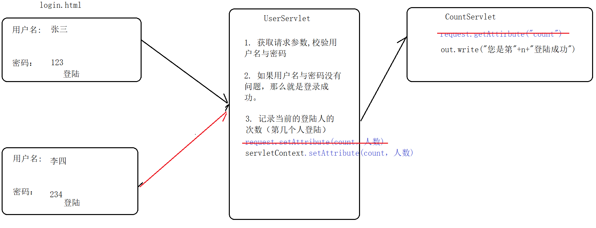
步骤
在init方法中得到上下文对象
创建count=0，并且将值放入上下文域中.
登录方法中得到用户名和密码
判断用户名和密码是否正确
如果正确，得到上下文对象
从上下文域中取出count
加1再更新上下文域
重定向到另一个Servlet
否则跳转到登录页面
代码
HTML
<!DOCTYPE html>
<html lang="zh-CN">
<head>
<meta charset="UTF-8">
<title>用户登录</title>
</head>
<body>
<h2>用户登录</h2>
<form action="/day28/userLogin" method="post">
<table>
<tr>
<td>用户名</td>
<td><input type="text" name="username"/></td>
</tr>
<tr>
<td>密码</td>
<td><input type="password" name="password"/></td>
</tr>
<tr>
<td colspan="2"><input type="submit" value="登录"/></td>
</tr>
</table>
</form>
</body>
</html>登录的Servlet
package com.itheima.web;
import javax.servlet.ServletContext;
import javax.servlet.ServletException;
import javax.servlet.annotation.WebServlet;
import javax.servlet.http.HttpServlet;
import javax.servlet.http.HttpServletRequest;
import javax.servlet.http.HttpServletResponse;
import java.io.IOException;
import java.io.PrintWriter;
/*
学习目标(了解)：使用ServletContext统计一个网站登录次数
*/
@WebServlet("/userLogin")
public class _12UserServlet extends HttpServlet {
protected void doPost(HttpServletRequest request, HttpServletResponse response) throws ServletException, IOException {
response.setContentType("text/html;charset=utf-8");
PrintWriter out = response.getWriter();
//1. 获取用户名与密码
String username = request.getParameter("username");
String password = request.getParameter("password");
//2. 校验用户名与密码
if("admin".equals(username)&&"123".equals(password)){
//3. 登陆成功后统计登陆次数，并且把登陆次数存储ServletContext中共享给其他Servlet
//得到ServletContext
ServletContext servletContext = this.getServletContext();
Object count = servletContext.getAttribute("count");
if(count==null){
//代表是第一次过来登陆
servletContext.setAttribute("count",1);
}else{
servletContext.setAttribute("count",(int)count+1);
}
}
//跳转到CountServlet显示登陆次数
response.sendRedirect(request.getContextPath()+"/countServlet");
}
protected void doGet(HttpServletRequest request, HttpServletResponse response) throws ServletException, IOException {
doPost(request, response);
}
}显示人数的Servlet
package com.itheima.web;
import javax.servlet.ServletContext;
import javax.servlet.ServletException;
import javax.servlet.annotation.WebServlet;
import javax.servlet.http.HttpServlet;
import javax.servlet.http.HttpServletRequest;
import javax.servlet.http.HttpServletResponse;
import java.io.IOException;
import java.io.PrintWriter;
/*
学习目标(了解)：使用ServletContext统计一个网站登录次数
*/
@WebServlet("/countServlet")
public class _13CountServlet extends HttpServlet {
protected void doPost(HttpServletRequest request, HttpServletResponse response) throws ServletException, IOException {
response.setContentType("text/html;charset=utf-8");
PrintWriter out = response.getWriter();
//1. 得到ServletContext
ServletContext servletContext = this.getServletContext();
//2.获取登录次数
Object count = servletContext.getAttribute("count");
//3. 输出
out.write("登陆的次数：<h1 style='color:red'>"+count+"</h1>");
}
protected void doGet(HttpServletRequest request, HttpServletResponse response) throws ServletException, IOException {
doPost(request, response);
}
}小结
| ServletContext的方法 | 作用 |
|---|---|
| Object getAttribute(“键”) | 往域中取出数据 |
| void setAttribute(“键”,Object 数据) | 往域中存储数据 |
| void removeAttribute(“键”) | 从域中删除数据 |
12.URL编码和解码
目标
- 为什么需要URL编码和解码
- 如何实现URL编码和解码
为什么需要URL编码和解码
浏览器与服务器在通讯的时候，如果遇到了汉字，是需要进行url编码的。 这个编码的工作是由浏览器帮你完成了。但是有时候我们从服务端传输某些数据的时候，tomcat服务器没有对该数据进行url编码的时候我们则需要自行编码。
有关的方法
| URL编码和解码有关的方法 | 功能 |
|---|---|
| URLEncoder.encode(“字符串”,”utf-8”) | 对字符串使用UTF-8进行编码 |
| URLDecoder.decode(“字符串”,”utf-8”) | 对字符串使用UTF-8进行解码 |
案例演示代码
package com.itheima.web;
import java.io.UnsupportedEncodingException;
import java.net.URLDecoder;
import java.net.URLEncoder;
/*
学习目标： 学习url的编码与url的解码
url编码与解码涉及方法：
1. URLEncoder.encode("字符串","utf-8")
2. URLDecoder.decode("字符串","utf-8")
*/
public class _14URLCode {
public static void main(String[] args) throws UnsupportedEncodingException {
String str= "中国";
String encode = URLEncoder.encode(str, "UTF-8");
System.out.println("url编码："+encode);
String decode = URLDecoder.decode(encode, "utf-8");
System.out.println("解码后的内容："+ decode);
}
}小结
URL编码的方法：URLEncoder.encode()
URL解码的方法：URLDecoder.decode()
13.案例：使用链接下载文件不足
目标
链接下载文件存在的问题
页面效果
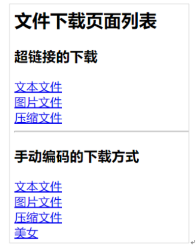
下载页面
<!DOCTYPE html>
<html lang="en">
<head>
<meta charset="UTF-8">
<title>Title</title>
</head>
<body>
<a href="download/1.jpg">兽兽1号</a><br/>
<a href="download/2.jpg">兽兽2号</a><br/>
<a href="download/3.jpg">兽兽3号</a><br/>
<a href="download/黑泽.jpg">黑泽</a><br/>
</body>
</html>小结：使用超链接下载的不足
- 文本文件，图片文件直接打开，不是下载。
- 会暴露资源的真实地址，有可能被其它网站盗链。
- 不利于进行业务逻辑控制，如下载的时候扣积分，会员登录才能下载。
14.案例：使用Servlet下载文件
目标
- 实现使用Servlet的方式下载文件
- 文件名有汉字的处理
下载设置的响应头
| 设置响应头 | 参数说明 |
|---|---|
| Content-Disposition: attachment; filename=文件名 | **Content-Disposition: 服务器数据的打开方式 attachment: 以附件的方式下载文件 **filename: 下载下来的文件名 |
步骤
- 从链接上得到文件名
- 设置content-disposition头
- 得到文件的输入流
- 得到response的输出流
- 写出到浏览器端
汉字乱码原理
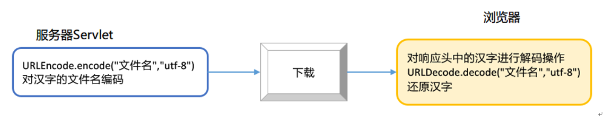
注：IE、Chrome下载中文采用的是URL编码，注：FireFox不能采用这种方式。
下载的Servlet代码
package com.itheima.web;
import org.apache.commons.io.IOUtils;
import javax.servlet.ServletContext;
import javax.servlet.ServletException;
import javax.servlet.ServletOutputStream;
import javax.servlet.annotation.WebServlet;
import javax.servlet.http.HttpServlet;
import javax.servlet.http.HttpServletRequest;
import javax.servlet.http.HttpServletResponse;
import java.io.IOException;
import java.io.InputStream;
import java.io.PrintWriter;
import java.net.URLEncoder;
/*
学习目标(了解)：利用Content-disposition响应头通知浏览器实现文件下载。
Content-disposition的作用： Content-disposition响应头通知浏览器实现文件下载。
*/
@WebServlet("/downLoad")
public class _15DownLoadServlet extends HttpServlet {
protected void doPost(HttpServletRequest request, HttpServletResponse response) throws ServletException, IOException {
//通知浏览器以文件下载的形式处理数据内容
String filename = "小马美女.jpg";
filename = URLEncoder.encode(filename,"utf-8");
response.setHeader("content-disposition","attachment;filename="+filename); //tomcat服务器并没有对该响应头进行url编码
//1. 得到response输出字节流
ServletOutputStream out = response.getOutputStream();
//2. 得到文件输入字节流
InputStream inputStream = this.getServletContext().getResourceAsStream("/img/美女.jpg");
//3. 把图片输出
IOUtils.copy(inputStream,out);
inputStream.close();
}
protected void doGet(HttpServletRequest request, HttpServletResponse response) throws ServletException, IOException {
doPost(request, response);
}
}小结
下载需要设置哪个响应头？
content-disposition
如果下载文件名中有汉字使用哪个方法编码？
URLEncoder.encode()
15.绘图有关的类和方法介绍[了解]
目标
- 了解Java中与绘图有关的类
- Graphics类中的方法
绘图有关的方法
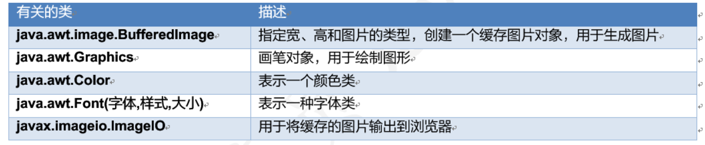
Graphics类的方法
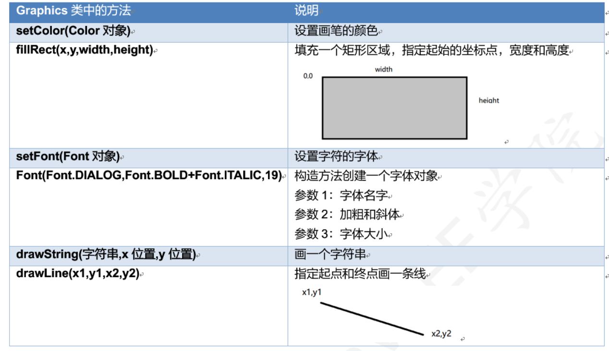
16. 验证码的绘制
目标
实现验证码的绘制
原理
验证码就是一张图片，验证码图片不是真实的资源图片而是缓存图片，图片的数据在缓存里面或内存里面，将内存中的缓存图片输出到浏览器上。
步骤
写一个方法随机获取颜色
private Color getRandomColor()创建生成验证码的代码
- 绘制矩形区域
- 创建缓存图片：指定宽width=90,height=30
- 获取画笔对象
- 设置画笔颜色
- 填充矩形区域
- 随机绘制4个验证码
- 从字符数组中随机得到字符 char[] arr = { ‘A’, ‘B’, ‘C’, ‘D’, ‘N’, ‘E’, ‘W’, ‘b’, ‘o’, ‘y’, ‘1’, ‘2’, ‘3’, ‘4’,’5’,’6’,’7’,’8’ };
- 循环4次，画4个字符
- 设置字的颜色为随机
- 设置字体，大小为18，
- 将每个字符画到图片，x增加，y不变。10+(i*20), 20
- 绘制8条干扰线
- 线的位置是随机的，x范围在width之中，y的范围在height之中。
- 画8条干扰线，每条线的颜色不同
- 将缓存的图片输出到响应输出流中
验证码Servlet代码
package com.itheima.web;
import org.apache.commons.io.IOUtils;
import javax.imageio.ImageIO;
import javax.servlet.ServletException;
import javax.servlet.ServletOutputStream;
import javax.servlet.annotation.WebServlet;
import javax.servlet.http.HttpServlet;
import javax.servlet.http.HttpServletRequest;
import javax.servlet.http.HttpServletResponse;
import java.awt.*;
import java.awt.image.BufferedImage;
import java.io.IOException;
import java.io.InputStream;
import java.net.URLEncoder;
import java.util.Random;
/*
学习目标(了解)：讲解验证码图片是如何生成
验证码涉及到的类：
1. BufferedImage 在内存中创建一个图片
2. ImageIO 把内存的图片输出
*/
@WebServlet("/verifyCode")
public class _16VerifyCodeServlet extends HttpServlet {
private Random random = new Random();
protected void doPost(HttpServletRequest request, HttpServletResponse response) throws ServletException, IOException {
// 在内存中创建一张图片
/*
BufferedImage(int width,int height, int imageType)
*/
BufferedImage image = new BufferedImage(90,30,BufferedImage.TYPE_INT_RGB);
//得到图片画笔
Graphics g = image.getGraphics();
//给画笔设置颜色
g.setColor(Color.GRAY);
//填充背景颜色
//int x, int y, int width, int height
g.fillRect(0,0,90,30);
//得到随机码
String code = getRandomCode();
//设置字体大小
g.setFont(new Font("宋体",Font.BOLD+Font.ITALIC,20));
for (int i = 0; i <code.length() ; i++) {
//得到一个字符
char c = code.charAt(i);
//每一个字符，我都设置一个颜色然后再写
g.setColor(getRandomColor());
//在画图板画字
g.drawString(c+"",10+i*20,20);
}
for (int i = 0; i <3 ; i++) {
//画干扰线
g.setColor(getRandomColor());
/*
drawLine(int x1, int y1, int x2, int y2);
两点一线
*/
int x1 = random.nextInt(90);
int y1 = random.nextInt(30);
int x2 = random.nextInt(90);
int y2 = random.nextInt(30);
g.drawLine(x1,y1,x2,y2);
}
//把图片输出
ImageIO.write(image,"png",response.getOutputStream());
}
protected void doGet(HttpServletRequest request, HttpServletResponse response) throws ServletException, IOException {
doPost(request, response);
}
//生成4位随机码
public Color getRandomColor(){
int r = random.nextInt(256);//0~255
int g = random.nextInt(256);//0~255
int b = random.nextInt(256);//0~255
return new Color(r,g,b);
}
//生成4位随机码
public String getRandomCode(){
char[] arr = {'1','A','a','汉','中','2','3','5','B'};
StringBuilder sb = new StringBuilder();
for (int i = 0; i <4 ; i++) {
//随机产生一个索引值
int index = random.nextInt(arr.length);
sb.append(arr[index]);
}
return sb.toString();
}
}17.验证码的使用
目标
- 将上面创建的验证码用在HTML页面中
- 点击验证码图片刷新验证码的功能
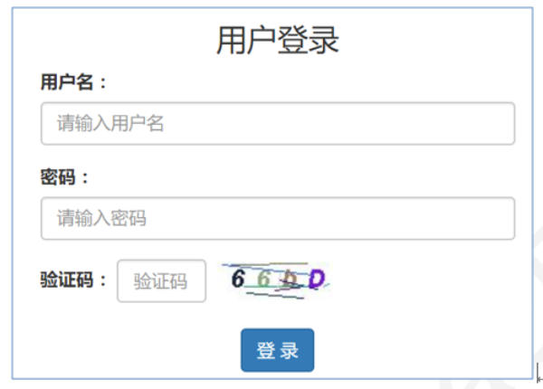
代码
<!DOCTYPE html>
<html lang="zh-CN">
<head>
<meta charset="UTF-8">
<title>用户登录</title>
</head>
<body>
<h2>用户登录</h2>
<form action="/day28/userLogin2" method="get">
<table>
<tr>
<td>用户名</td>
<td><input type="text" name="username"/></td>
</tr>
<tr>
<td>密码</td>
<td><input type="password" name="password"/></td>
</tr>
<tr>
<td>验证码</td>
<td><input type="text" name="code"/>
<img id="img" src="/day28/verifyCode">
</td>
</tr>
<tr>
<td colspan="2"><input type="submit" value="登录"/></td>
</tr>
</table>
</form>
<script>
//1. 找到图片的节点
var img = document.getElementById("img");
//注册点击事件
img.onclick =function(){
//我们在修改图片的路径的时候，如果浏览器发现图片的路径没有发生变化，那么浏览器不会重新发出请求。
this.src="/day28/verifyCode?id="+new Date(); //id的这个参数的的作用？只是为欺骗浏览器，说地址已经改变了，通知浏览器重新发出请求
}
</script>
</body>
</html>小结
- 在Servlet中使用java.awt包中的类绘制图片
- 在HTML上使用img标签访问Servlet，显示验证码
- 实现点击验证码刷新的功能